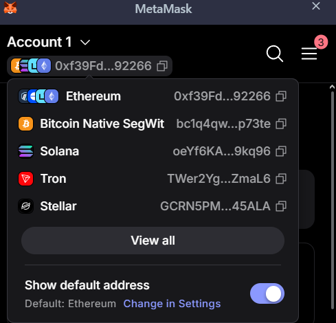

Hashing, key derivation and cryptographic primitives in an Ethereum HD wallet, with their statistical properties. Every value on this page is computed live in the browser (ethers.js). It builds on HMWK 1: step 4 of the pipeline is exactly the scalar multiplication Q = kG implemented there, on the real curve instead of the toy one.
| Concept | What it is | Where in the pipeline |
|---|---|---|
| Key generation | Creates new secret material from true randomness. Not reproducible; done once. | The initial entropy of the mnemonic. |
| Key derivation | Deterministically computes keys from existing secret material: same input → same output. | Mnemonic → seed (BIP-39); seed → private keys (BIP-32/44). |
| Public-key cryptography | A key pair linked by a one-way function: the public key is shared, the private key signs. | secp256k1: private key → public key; ECDSA signatures. |
| Hashing | Maps any input to a fixed-size digest; one-way, collision resistant, random-looking. | Keccak-256 for the address; SHA-256/512 inside BIP-39 and BIP-32. |
| Checksum | Redundancy that detects accidental errors (typos). No protection against an attacker. | Last bits of the mnemonic (BIP-39); letter case (EIP-55). |
| Encoding | Reversible change of representation, without any secrecy. | Bits → words (BIP-39); bytes → hex; mixed-case hex (EIP-55). |
m / purpose' / coin_type' / account' / change / index.
For Ethereum: m/44'/60'/0'/0/i. This is why the same mnemonic gives the same accounts in MetaMask, Rabby, Exodus, …The hash-based steps (PBKDF2, HMAC-SHA512, Keccak-256) should behave like random functions: balanced bits, uniform hex digits, avalanche effect, unrelated outputs for related inputs. For them these tests are meaningful. secp256k1 instead keeps an algebraic structure (HMWK 1, section 5): its security comes from the discrete-logarithm problem, not from statistical randomness. The tests below are the same ones used in HMWK 1, section 4 (bit balance, avalanche, uniformity), now applied to the hash-based steps, where they are meaningful.
Click the button (it derives the addresses from the mnemonic above).
| Year | Technology | Note |
|---|---|---|
| 1977 | RSA | First practical public-key cryptosystem. |
| 1985 | Elliptic-curve cryptography | Proposed independently by Koblitz and Miller: same security as RSA with much smaller keys. |
| 2001 | SHA-2 (SHA-256, SHA-512) | NIST standard; used by Bitcoin and inside BIP-32/39. |
| 2009 | Bitcoin | Uses secp256k1 for signatures. |
| 2012 | BIP-32; Keccak wins the SHA-3 competition | HD wallets. |
| 2013 | BIP-39 | Mnemonic phrases. |
| 2014 | BIP-44 | Standard derivation paths. |
| 2015 | Ethereum launch; SHA-3 (FIPS 202) | Ethereum had already fixed the original Keccak before NIST changed the padding. |
| 2016 | EIP-55 | Checksum for Ethereum addresses. |
Old, well-studied primitives (public-key cryptography, hash functions) come first; the newer standards on top solve usability problems: backup, many accounts from one secret, typo detection.
0x01 (Keccak) to 0x06 (SHA-3). Ethereum had already adopted the original Keccak.
Same permutation, different padding → different outputs:Each step solves a different problem, and no single primitive has all the required properties:
Separating the roles also lets each component be analysed, standardised and, if needed, replaced independently.
Importing the test mnemonic test test … junk into MetaMask (in a separate test browser profile) shows as first account
0xf39Fd6e51aad88F6F4ce6aB8827279cffFb92266, the same address computed above with index 0: the wallet follows exactly
BIP-39 → BIP-32 → BIP-44 (m/44'/60'/0'/0/i) → secp256k1 → Keccak-256 → EIP-55, including the EIP-55 letter case.
Further accounts correspond to increasing the index i. Creating a new wallet is the only generation step; restoring from the
words is pure derivation.

The same screenshot also shows Bitcoin, Solana, Tron and Stellar addresses derived from the same 12 words. This is the
key-management layer (BIP-39 / BIP-32 / BIP-44) at work: one seed, different coin_type values in the path
(0 for Bitcoin, 60 for Ethereum, …), and then each blockchain applies its own curve, hash and encoding. The seed is shared;
the cryptographic primitives after it are chain-specific.
An AI assistant (Claude) was used as a tutor and to draft parts of the code and text. I reviewed the content, corrected what was wrong or unverified (for example, the description of the wallet check, which now only states what I actually observed), and checked the pipeline myself against a real wallet: importing the test mnemonic into MetaMask gave the same address as this page (section 9).